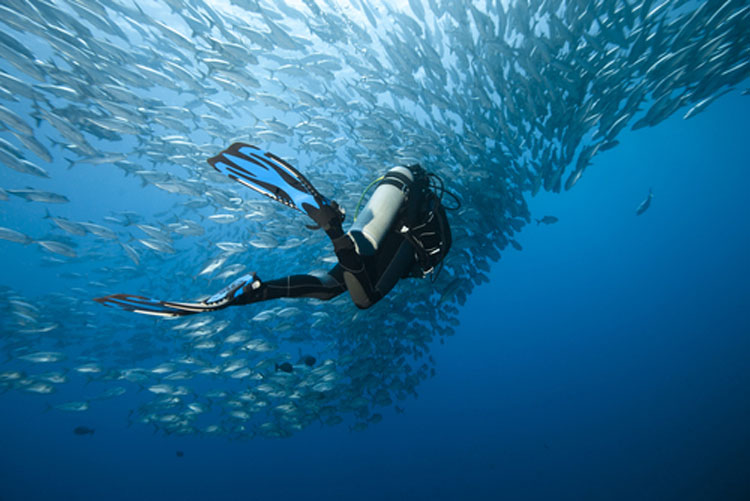

Gʻavvosni suvga tushirish, uning suv tagida ishlashi va uni yuqoriga chiqarib olish uchun Gʻavvos kompressori, havo yuborish qurilmasi, tushirish va chiqib olish qurilmasi, signalizatsiya, aloqa va yoritish vositasi, gidrolokatorlar ishlatiladi.
